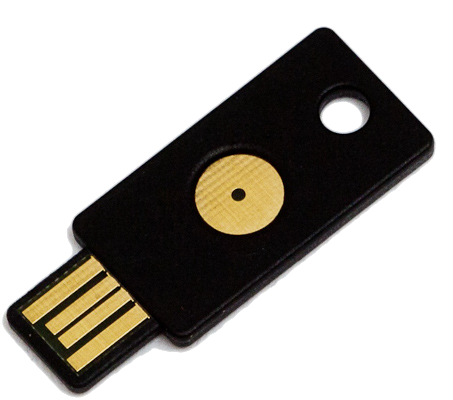

Yubikey : Configure your yubikey with pam
Contents
|  | |
| Software version | |
|---|---|
| Operating System | Debian 7/8 |
| Website | Yubikey Website |
| Last Update | 22/04/2015 |
| Others | |
{kind=link}
1 Introduction
I've bought Yubikeys to manage several things. They permit 2 different kind of authentications per key. The authentication methods are:
- Yubico OTP
- OATH-HOTP
- Static Password
- Challenge-Response
The thing I wanted to do is authentication through my Yubikey without password, but still the possibility to connect my user password if I loose my key. And the other thing is to lock my computer if I remove the key.
2 Installation
To install, we'll use packages. One for pam and the GUI for configuration :
| |
aptitude install yubikey-personalization-gui libpam-yubico |
3 Configuration
3.1 Challenge-Response
3.1.1 Gui
We're now going to configure the key. Insert it and launch gui :
| |
yubikey-personalization-gui |
Select the challenge-response menu and SHA-1 challenge :
{kind=link}
Then select all things like in the screen below :
{kind=link}
The 3 step, if checked, need a 2,5 key press to unlock.
Then save the challenge-response to your user settings :
| |
ykpamcfg -v -2 |
3.1.2 pam
The configuration of pam is quick and easy, simply add this line :
| |
# # /etc/pam.d/common-auth - authentication settings common to all services # # This file is included from other service-specific PAM config files, # and should contain a list of the authentication modules that define # the central authentication scheme for use on the system # (e.g., /etc/shadow, LDAP, Kerberos, etc.). The default is to use the # traditional Unix authentication mechanisms. # # As of pam 1.0.1-6, this file is managed by pam-auth-update by default. # To take advantage of this, it is recommended that you configure any # local modules either before or after the default block, and use # pam-auth-update to manage selection of other modules. See # pam-auth-update(8) for details. # here are the per-package modules (the "Primary" block) auth sufficient pam_yubico.so mode=challenge-responseauth [success=2 default=ignore] pam_unix.so nullok_secure auth [success=1 default=ignore] pam_winbind.so krb5_auth krb5_ccache_type=FILE cached_login try_first_pass # here's the fallback if no module succeeds auth requisite pam_deny.so # prime the stack with a positive return value if there isn't one already; # this avoids us returning an error just because nothing sets a success code # since the modules above will each just jump around auth required pam_permit.so # and here are more per-package modules (the "Additional" block) auth optional pam_cap.so # end of pam-auth-update config |
3.1.3 udev
We'll install the udev rule :
| |
cp /lib/udev/rules.d/69-yubikey.rules /etc/udev/rules.d/ |
and override it to add a custom script (screensaver lock) :
| |
ACTION!="add|change", GOTO="yubico_end"
# Udev rules for letting the console user access the Yubikey USB
# device node, needed for challenge/response to work correctly.
# Yubico Yubikey II
ATTRS{idVendor}=="1050", ATTRS{idProduct}=="0010|0110|0111|114|116", \
ENV{ID_SECURITY_TOKEN}="1"
LABEL="yubico_end" # Launch on removeACTION=="remove", SUBSYSTEM=="usb", ENV{ID_VENDOR_ID}=="1050", ENV{ID_MODEL_ID}=="0010", RUN+="/path/yubi_remove_script.sh"
# Launch on insert
# ACTION=="add", SUBSYSTEM=="usb", ATTRS{idVendor}=="1050", ATTRS{idProduct}=="0010", RUN+="/path/yubi_add_script.sh" |
You can test if udev see correctly your key with that command (try to insert and remove it) :
| |
udevadm monitor --property |
Then reload udev rules :
| |
udevadm control --reload-rules udevadm trigger |
And create the script where you've declared it :
| |
#! /bin/bash export DISPLAY=":0" su <username> -c "/usr/bin/xscreensaver-command -lock" |
And change the username by your wished one. Do not forget to add rights :
| |
chmod 755 yubi_script.sh |
4 FAQ
4.1 How do I enable debug ?
It's easy to add debug mode. Simply add "debug" to the pam line :
| |
# # /etc/pam.d/common-auth - authentication settings common to all services # # This file is included from other service-specific PAM config files, # and should contain a list of the authentication modules that define # the central authentication scheme for use on the system # (e.g., /etc/shadow, LDAP, Kerberos, etc.). The default is to use the # traditional Unix authentication mechanisms. # # As of pam 1.0.1-6, this file is managed by pam-auth-update by default. # To take advantage of this, it is recommended that you configure any # local modules either before or after the default block, and use # pam-auth-update to manage selection of other modules. See # pam-auth-update(8) for details. # here are the per-package modules (the "Primary" block) auth sufficient pam_yubico.so debug mode=challenge-responseauth [success=2 default=ignore] pam_unix.so nullok_secure auth [success=1 default=ignore] pam_winbind.so krb5_auth krb5_ccache_type=FILE cached_login try_first_pass # here's the fallback if no module succeeds auth requisite pam_deny.so # prime the stack with a positive return value if there isn't one already; # this avoids us returning an error just because nothing sets a success code # since the modules above will each just jump around auth required pam_permit.so # and here are more per-package modules (the "Additional" block) auth optional pam_cap.so # end of pam-auth-update config |
and create debug file informations :
| |
touch /var/run/pam-debug.log chmod 666 /var/run/pam-debug.log |
You now can try to look at /var/run/pam-debug.log file.
4.2 USB error: Access denied (insufficient permissions)
A possible solution is to add a group to udev and makes your user belong to that group. Example :
| |
ACTION=="add|change", SUBSYSTEM=="usb", ATTRS{idVendor}=="1050", ATTRS{idProduct}=="0010", MODE="0664", GROUP="yubikey" |
Here you need to create a "yubikey" group and add your current user to that group.
Now reload the rules :
| |
udevadm control --reload-rules udevadm trigger |
It should works now.
5 References
http://craoc.fr/doku.php?id=yubikey#configuration_de_la_yubikey